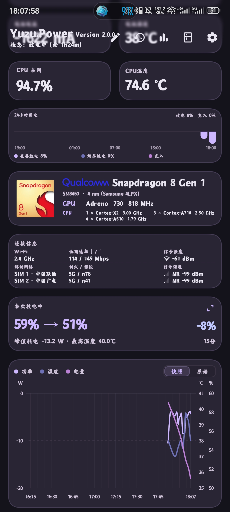

实时监测
同一界面读取瞬时功率、电压、电流与温度。电流单位自动识别为 μA 或 mA，显示异常时可手动切换。
正式版 2.0.0 · Android
Yuzu.Power 是一款轻量级 Android 应用，用于监测设备的充放电功率。瞬时功率、电压、电流与温度置于同一界面；每一次充放电，均可保存为曲线与会话记录。

主屏同时容纳实时读数与本次会话。组件可以按使用习惯增减；悬浮窗则把常用数据留在其他应用之上。以下截图来自正式版界面。
向右滑动，可继续查看悬浮窗、应用冰箱与稳定运行。
由哔哩哔哩作者 Sakula_小柚柚 开发并持续发布。2.0.0 在原有功率记录之外，补充了连接信息、速率组件与自律空间。
同一界面读取瞬时功率、电压、电流与温度。电流单位自动识别为 μA 或 mA，显示异常时可手动切换。
记录起止电量、峰值与平均功率、温度变化及结束原因，并将功率、温度与电量绘制为曲线。
组件可添加、移除，并调整尺寸与位置。刷新率、循环次数与核心频率可按需要放入主屏。
支持展开与收起两种布局。2.0.0 起可加入分别显示上传与下载速率的网络组件。
可查看 Wi-Fi 与移动网络的运营商、制式、频段、协商速率及信号强度，并支持多 SIM 卡与详情展开。
按应用区分前台、后台、前台服务与缓存耗电。应用冰箱为公测功能，可按名称、包名或 UID 检索。
支持定时冷藏第三方应用，并可设置豁免项。本次结束后自动恢复，用于减少后台干扰。
提供功率校准。可查看芯片型号、频率与各核心占用；部分温度需 Shizuku。2.0.0 更新了剩余放电时间的预测模型。
完整发布说明与历史安装包见 GitHub Releases。
新增连接信息、网络速率组件与自律空间；统计 Shizuku 守护近 24 小时的恢复次数；更新剩余时间预测，并降低后台采样的内存占用与功耗。
优化校准算法与部分界面。新增应用冰箱（测试）与功耗统计。特别鸣谢迁至「关于 → 更新与声明」，隐藏后台迁至「稳定运行」。
重构应用架构。新增校准、处理器信息、界面自定义与悬浮窗。自此版本起，最低系统为 Android 12。
重构界面并加入软件优化。若停留在优化界面，请清除本应用数据后重新进入。
首个正式版。此前经过 34 个版本打磨。1.2.0 与 1.3.0 分别处理了返回卡顿，以及部分异形屏与第三方灵动岛说明。
下载
若仍有疑问，可在 GitHub Issues 或哔哩哔哩动态下留言。
不是。Yuzu.Power 只监测 Android 设备的充放电功率。名称中的 Yuzu 来自作者所用的「柚」，与游戏主机及模拟器无关。
适用于 Android。作者标注的主流机型支持率为 98.6%，中兴、努比亚与红魔系列表现最为完整。OPPO 系电流单位已单独适配，无电池设备亦可查看功率。1.8.0 及后续版本需要 Android 12 及以上；更低系统请安装 1.4.0。
部分温度与处理器信息需要 Shizuku 授权。编辑组件时，应用会标明哪些数据依赖该授权。建议使用 AxManager 进行管理。若从 1.8.0 升级后授权失效，请先停止 Shizuku，再重新激活。
应用读取的是设备侧数据，并会自动识别电流单位。若单位明显异常，请在设置中手动切换 μA 与 mA。不同机型的传感器实现存在差异，读数不必与外置功率计完全相同。
从 1.4.0 升级时，请先备份，安装后清除本应用数据，再重新导入。1.8.0 为架构重构，更新前同样建议备份充电数据。若更新后闪退，请先确认系统是否为 Android 12 及以上。
请只从 GitHub Releases 下载。当前正式版文件为 Yuzu.Power2.0.0-PL.apk，约 20.6 MB。本站不托管安装包，也不读取访客设备的电池数据。
开发与持续发布由哔哩哔哩作者 Sakula_小柚柚 完成。以下为本站整理的公开信息。